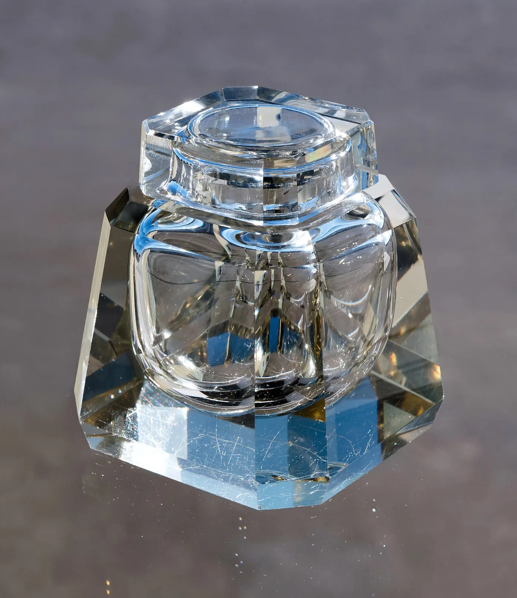
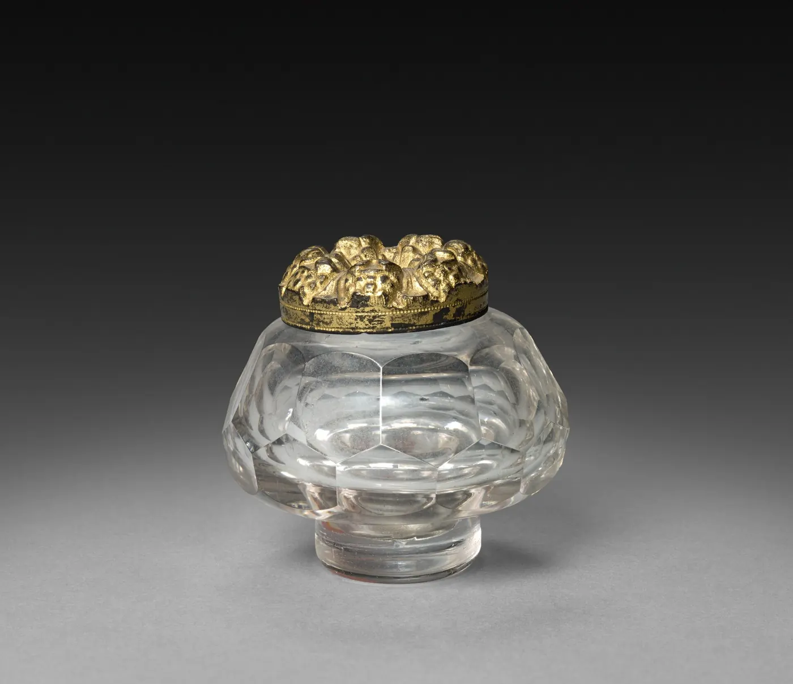
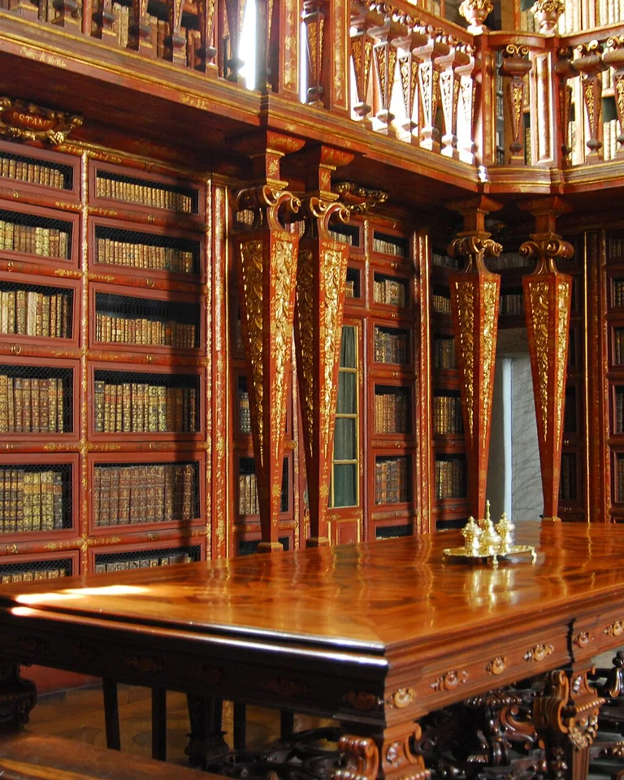
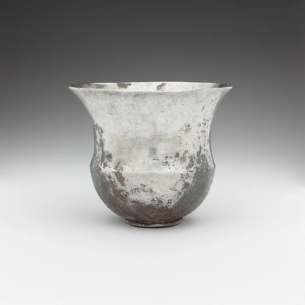

Gallery
Gallery
Atmospheric images, held in a green and gold frame.

The candlelit study
Where the evening begins

Silver in the dark
A small, cold light

A rose after midnight
Dark, but not severe

The old shelves
Books that remember hands

Ink and memory
The archive of a quiet room

Still life with light
Objects left behind

Bottle of ink
A small dark pool

A nineteenth-century inkwell
The desk of another era

Redouté's rose
Ink pressed into paper

The gilt cases
Gold leaf, worn leather
Trishhhh · CC BY 2.0
Silver at rest
A cold, patient gleam

A quiet flame
Light kept for the page
All images are public domain, CC0 or CC BY atmospheric works from Wikimedia Commons and museum Open Access collections. No character portraits are used.